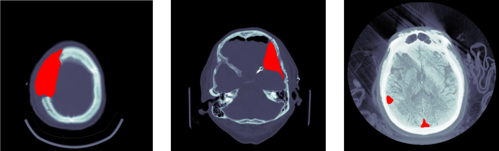
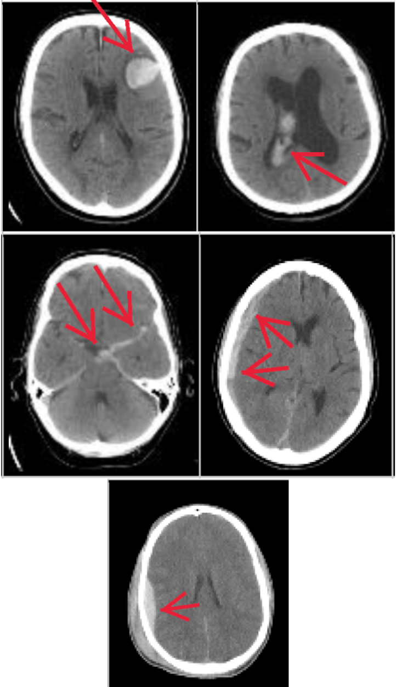
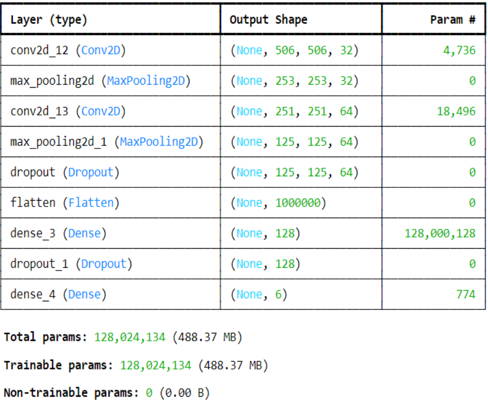
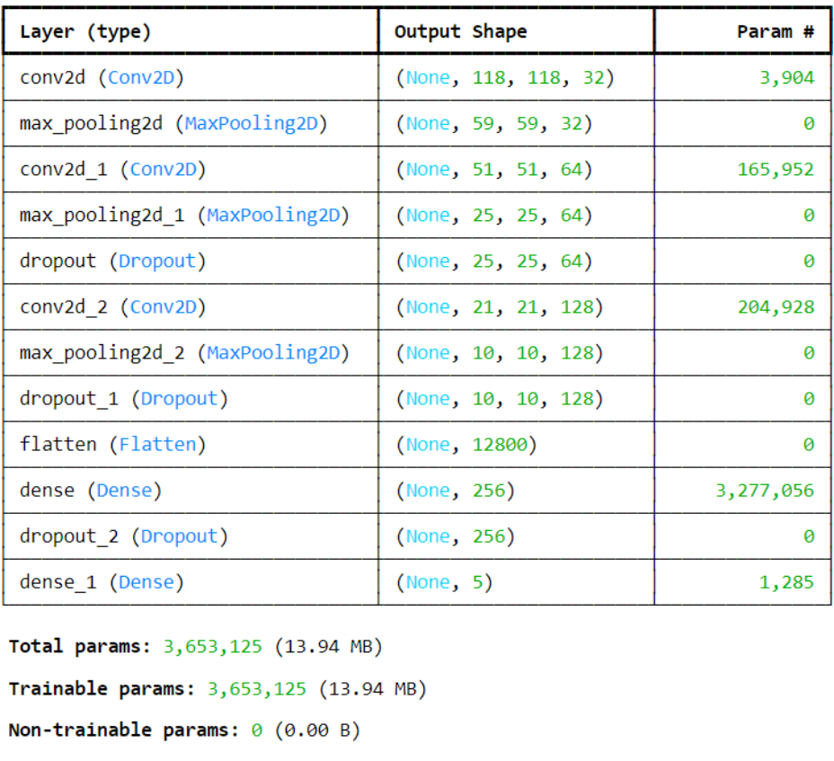

Brain Hemorrhage Classifier
Genres: Python, Neural Networks, Data Transformation, Tensorflow
This goal of this project was to utilize Artificial Intelligence techniques to classify brain hemorrhages
based on real brain scan image data. We were given thousands of brain scan files of assorted hemorrhage types,
including intraparenchymal, intraventricular, subarachnoid, subdural, epidural, and mixed bleeding.
The images looked like this:

These images are real brain scan image data from a company in Boston, and along with the images we were provided
the real classification label of each hemorrhage scan.
We reduced the dimensionality of the image data by making them lower definition and greyscale, which drastically
dropped our trainable parameters.



After training, the CNN was able to classify one of the 6 types of brain hemorrhages ~60% of the time. Ideally,
given more time and computational power, we would have improved our model by increasing the number of trainable
parameters with multi-window input data.